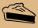

فانيليا فرنسية
3.00
في هذه الورشة، ستتدرب على أساسيات CSS (أوراق الأنماط المتتالية - Cascading Style Sheets) من خلال إنشاء قائمة طعام لمقهى (a cafe menu).
<!DOCTYPE html>
<html lang="ar" dir="rtl">
<head>
<meta charset="UTF-8">
<title>قائمة المقهى</title>
</head>
<body>
<!-- هنا تضع اكواد التطبيق -->
</body>
</html>
ابدأ بإضافة بعض المحتوى إلى القائمة. أضف عنصراً رئيسياً main داخل عنصر الجسم body الموجود حالياً؛ إذ سيحتوي هذا العنصر لاحقاً على معلومات الأسعار الخاصة بالقهوة والحلويات التي يقدمها المقهى.
اسم المقهى هو مقهى التقنية. لذا، أضف عنصر h1 داخل العنصر الرئيسي (main element)، واجعل محتواه اسم المقهى.
لإعلام الزوار بأن المقهى قد تأسس عام 2025، أضف عنصراً من النوع p أسفل العنصر h1 يحتوي على النص تأسست عام 2025.
ستتضمن القائمة قسمين: أحدهما للقهوة والآخر للحلويات. أضف عنصراً من نوع section داخل العنصر الرئيسي main لتوفير مكان تضع فيه جميع أنواع القهوة المتاحة.
أنشئ عنصر h2 داخل عنصر section واجعل النص بداخله قهوة.
حتى الآن، كانت سيطرتك على طريقة عرض محتواك ومظهره محدودة. ولتغيير ذلك، أضف عنصر نمط (style element) داخل عنصر الرأس (head element).
في الدروس السابقة، تعلمت كيفية إضافة خصائص وقيم CSS بهذا الشكل:
element {
property: value;
}
قم بمحاذاة محتوى عنصر h1 في المنتصف عن طريق ضبط خاصية text-align على القيمة center.
في الخطوة السابقة، استخدمتَ مُحدِّد النوع (type selector) لتنسيق العنصر h1. قم بمحاذاة محتوى العنصرين h2 و p إلى المنتصف عن طريق إضافة مُحدِّد نوع جديد لكل منهما إلى عنصر التنسيق (style element) الموجود.
لديك الآن ثلاثة مُحدِّدات نوع (type selectors) تشترك في نفس التنسيق. يمكنك تطبيق مجموعة التنسيقات نفسها على عناصر متعددة من خلال إنشاء قائمة بالمُحدِّدات، حيث يتم الفصل بين كل مُحدِّد وآخر "بفاصلة" (commas)، على النحو التالي:
selector1, selector2 {
property: value;
}
احذف محددات النوع الثلاثة الموجودة واستبدلها بقائمة محددات واحدة تُحاذي النص في المنتصف لعناصر h1 و h2 و p.
لقد قمت بتنسيق ثلاثة عناصر عن طريق كتابة أكواد CSS داخل وسوم style. ورغم أن هذه الطريقة فعالة، إلا أنه نظراً لاحتمالية إضافة المزيد من التنسيقات، فمن الأفضل وضع جميع التنسيقات في ملف منفصل وربطه بالصفحة.
قم بإنشاء ملف styles.css منفصل.
ابدأ بنقل الأنماط التي أنشأتها إلى ملف styles.css؛ وتأكد من استبعاد وسوم الفتح والإغلاق الخاصة بالأنماط (style tags).
الآن بعد أن أصبح كود CSS موجوداً في ملف styles.css، قم بإزالة عنصر style وكافة محتوياته؛ وبمجرد إزالته، سيعود النص الذي كان متمركزاً في المنتصف إلى جهة اليمين.
الآن، عليك ربط ملف styles.css ليتم تطبيق الأنماط مرة أخرى. أضف عنصر link داخل عنصر head؛ وامنحه السمة rel بقيمة "stylesheet" والسمة href بقيمة "styles.css".
ملاحظة: يُعد عنصر link عنصراً فارغاً (void element)، مما يعني أنه لا يحتوي على وسم إغلاق. لذا، ينبغي كتابة العناصر الفارغة بالصيغة <link> بدلاً من <link></link>.
لجعل تنسيق الصفحة يبدو متشابهاً على الأجهزة المحمولة وأجهزة الكمبيوتر المكتبية أو المحمولة، تحتاج إلى إضافة عنصر meta يحتوي على سمة محتوى content خاصة.
لقد تعرفت على عنصر meta الخاص بمنطقة العرض (viewport) في دروس سابقة.
إليك مثال:
<meta name="viewport" content="width=device-width, initial-scale=1.0">
تمت إعادة توسيط النص، مما يعني أن الرابط المؤدي إلى ملف CSS يعمل بشكل صحيح. أضف نمطاً آخر إلى الملف يغير خاصية لون الخلفية background-color إلى اللون البني brown لعنصر الجسم body.
تجعل الخلفية البنية قراءة النص أمراً صعباً. غيّر لون خلفية عنصر body إلى اللون burlywood؛ ليصبح للخلفية لونٌ ما، مع الحفاظ على إمكانية قراءة النص.
يُستخدم العنصر div بشكل أساسي لأغراض تنسيق وتخطيط الصفحة، وذلك بخلاف عناصر المحتوى الأخرى التي استخدمتها حتى الآن. أضف عنصراً من نوع div داخل العنصر body، ثم انقل جميع العناصر الأخرى إلى داخل هذا العنصر div الجديد.
داخل وسم div الافتتاحي، أضف السمة id بقيمة menu.
الهدف الآن هو جعل عنصر div لا يشغل كامل عرض الصفحة؛ وتُعد خاصية width في CSS مثالية لهذا الغرض.
يمكنك استخدام مُحدِّد المعرِّف (id selector) لاستهداف عنصر محدد يحمل السمة id.
لقد تعلمت كيفية التعامل مع مُحدِّد المعرِّف (id selector) في الدروس السابقة على النحو التالي:
#cat {
width: 250px;
}
استخدم المُحدِّد #menu لمنح العنصر الخاص بك عرضاً قدره 300px.
تبدو التعليقات في CSS هكذا:
/* اكتب تعليقاً هنا */
في ملف الأنماط (style sheet)، قم بتحويل السطر الذي يحتوي على الخاصية background-color وقيمتها إلى تعليق، وذلك لتتمكن من رؤية تأثير تنسيق العنصر #menu وحده؛ فهذا سيعيد لون الخلفية إلى الأبيض.
الآن، استخدم مُحدِّد #menu الحالي لضبط لون خلفية عنصر div ليكون burlywood.
من السهل الآن ملاحظة أن النص يتوسط العنصر #menu. وحالياً، تم تحديد عرض العنصر #menu بوحدة البكسل px.
غيّر قيمة الخاصية width لتصبح 80% ، وذلك لجعل العرض مساوياً لـ 80% من عرض العنصر الأب body.
بعد ذلك، ستحتاج إلى توسيط العنصر #menu أفقياً. يمكنك القيام بذلك عن طريق ضبط خاصيتي الهامش الأيسر margin-left والهامش الأيمن margin-right على القيمة auto. تخيّل الهامش (margin) على أنه مساحة غير مرئية تحيط بالعنصر؛ وباستخدام هاتين الخاصيتين، قم بتوسيط العنصر #menu داخل العنصر body .
لقد استخدمتَ حتى الآن مُحدِّدات النوع (type selectors) ومُحدِّدات المُعرِّف (id selectors) لتنسيق العناصر؛ ومع ذلك، فمن الشائع أكثر استخدام مُحدِّد مختلف لتنسيق العناصر.
لقد تعلمت كيفية التعامل مع مُحدِّدات الفئات (class selector) في دروس سابقة، على النحو التالي:
.class-name {
property: value;
}
حوّل مُحدِّد #menu الحالي إلى مُحدِّد فئة (class selector) عن طريق استبدال #menu بمُحدِّد الفئة .menu.
لتطبيق تنسيق الفئة (class) على عنصر div ، قم بإزالة السمة id وأضف السمة class إلى وسم البداية الخاص بالعنصر div ؛ وتأكد من ضبط قيمة الفئة لتكون menu.
بما أن المنتج الرئيسي الذي يبيعه المقهى هو القهوة، فيمكنك استخدام صورة لحبوب القهوة كـ"خلفية للصفحة" (page background).
احذف التعليق ومحتوياته الموجودة داخل مُحدِّد العنصر body. بعد ذلك، أضف الخاصية background-image واضبط قيمتها على
url(https://openarabtech.github.io/CSSVerse/src/assets/beans.jpg)
الآن وقد أصبحت الأمور تبدو جيدة، حان الوقت للبدء في إضافة بعض عناصر القائمة (menu items).
أضف عنصر article فارغاً أسفل العنوان قهوة . سيحتوي هذا العنصر على نكهة وسعر أحد أنواع القهوة التي تقدمها حالياً.
عادةً ما تشتمل عناصر المقال article على عناصر متعددة تتضمن معلومات مترابطة؛ ففي هذه الحالة، سيحتوي العنصر على نكهة القهوة وسعر تلك النكهة.
ضع عنصرين من نوع p داخل عنصر المقال article. يجب أن يكون نص العنصر الأول فانيليا فرنسية ، ونص العنصر الثاني 3.00.
بدءاً من أسفل زوج القهوة والسعر الحالي، أضف أنواع القهوة والأسعار التالية باستخدام عناصر article بحيث يحتوي كل منها على عنصرَي p "متداخلين" (nested).
كاراميل ماكياتو 3.75
توابل اليقطين 3.50
بندق 4.00
موكا 4.50
كما في السابق، يجب أن يحتوي نص عنصر الفقرة p الأول على نكهة القهوة، بينما يجب أن يحتوي نص عنصر الفقرة p الثاني على السعر.
تظهر النكهات والأسعار حالياً مكدسة فوق بعضها البعض وتتوسط عناصر الفقرة p الخاصة بها؛ وسيكون من الأفضل لو كانت النكهة على اليمين والسعر على اليسار.
أضف اسم الفئة flavor إلى عنصر فانيليا فرنسية.
باستخدام فئة النكهة (flavor class) الجديدة كمُحدِّد، اضبط قيمة الخاصية text-align على right.
بعد ذلك، عليك محاذاة السعر إلى اليسار. أضف فئة (class) باسم price إلى عنصر الفقرة p الذي يحتوي على النص 3.00.
الآن، قم بمحاذاة النص إلى اليسار left للعناصر التي تحمل فئة price.
هذا هو ما تريده تقريباً، ولكن سيكون من الجيد الآن أن يظهر كل من النكهة والسعر على السطر نفسه؛ فالعناصر من النوع p تُعد عناصر "مستوى الكتلة" (block-level elements)، ولذلك فهي تشغل العرض الكامل للعنصر الأب (parent element).
لجعلها على نفس الخط، تحتاج إلى تطبيق بعض التنسيقات على عناصر p بحيث تتصرف بشكل أشبه بالعناصر المضمنة (inline elements).
للقيام بذلك، ابدأ بإضافة سمة class بقيمة item إلى عنصر article الأول الموجود تحت العنوان قهوة.
توجد عناصر p متداخلةً داخل عنصر article يحمل السمة class بالقيمة item. ويمكنك تنسيق جميع عناصر p المتداخلة في أي مكان داخل عناصر تحمل الفئة (class) المسماة item على النحو التالي:
.item p { }
باستخدام المُحدِّد (selector) المذكور أعلاه، أضف الخاصية display بقيمة inline-block لتصبح عناصر p أقرب في سلوكها إلى العناصر المضمنة (inline elements).
هذا أقرب إلى النتيجة المطلوبة، لكن السعر لم يظل في جهة اليمين؛ والسبب في ذلك هو أن العناصر من النوع (inline-block) تشغل فقط مساحة العرض الخاصة بمحتواها.
لتوزيعها، أضف خاصية العرض width بقيمة 50% إلى كل من محددات الفئة (class selectors) الخاصة بالنكهة flavor والسعر price.
حسناً، لم ينجح ذلك. إن ضبط نمط عناصر p ليكون inline-block ووضعها في أسطر منفصلة يُنشئ مسافة إضافية إلى يسار عنصر p الأول، مما يؤدي إلى انتقال العنصر الثاني إلى السطر التالي.
إحدى طرق معالجة ذلك هي جعل عرض كل عنصر من عناصر الفقرة p أقل بقليل من 50%؛ لذا، غيّر قيمة العرض width إلى 49% لكل فئة (class) لترى النتيجة.
لقد نجح ذلك، ولكن لا تزال هناك مسافة صغيرة على يسار السعر.
يمكنك الاستمرار في تجربة نسب مئوية مختلفة للعرض، ولكن بدلاً من ذلك، استخدم مفتاح (Backspace) لنقل عنصر p الذي يحمل الفئة price ليصبح بجوار عنصر p الذي يحمل الفئة flavor ، بحيث يظهران على السطر نفسه في المحرر. تأكد من عدم وجود مسافة فاصلة بين العنصرين.
الآن، قم بتغيير عرض كل من فئات النكهة flavor وفئات السعر price ليكون 50% مرة أخرى.
الآن بعد أن تأكدت من أن الأمر ينجح، يمكنك تعديل بقية عناصر article و p لتطابق المجموعة الأولى. ابدأ بإضافة الفئة (class) المسماة item إلى عناصر article الأخرى.
بعد ذلك، ضع عناصر p الأخرى على السطر نفسه بحيث لا توجد مسافة بينها.
لإكمال عملية التنسيق، أضف أسماء الفئات (class names) المناسبة — flavor و price — إلى جميع عناصر p المتبقية.
إذا قمت بتقليل عرض معاينة الصفحة، فستلاحظ عند نقطة معينة أن بعض النصوص الموجودة على اليمين تبدأ في الانتقال إلى السطر التالي؛ ويعود ذلك إلى أن عرض عناصر الفقرة p الموجودة على الجانب الأيمن لا يمكن أن يشغل سوى 50% من المساحة.
بما أن الأسعار الموجودة على اليسار تتكون من عدد أقل بكثير من الأحرف، قم بتعديل عرض width فئة النكهة flavor ليصبح 75% وعرض width فئة السعر price ليصبح 25%.
ستعود لتنسيق القائمة (menu) بعد بضع خطوات، ولكن في الوقت الحالي، قم بإضافة عنصر قسم section ثانٍ أسفل القسم الأول لعرض أصناف الحلوى التي يقدمها المقهى.
أضف عنصر h2 في القسم الجديد واجعل نصه الحلويات.
أضف عنصر article فارغاً أسفل العنوان الحلويات ، وامنحه سمة class بقيمة item.
ضع عنصرَي p داخل عنصر article. يجب أن يكون نص العنصر الأول كعكة محلاة ، ونص العنصر الثاني 1.50. ضعهما معاً في السطر نفسه، مع الحرص على عدم وجود مسافة بينهما.
بالنسبة لعنصري الفقرة p اللذين أضفتهما للتو، اجعل القيمة dessert هي قيمة السمة class لعنصر الفقرة الأول، والقيمة price هي قيمة السمة class لعنصر الفقرة الثاني.
يبدو أن هناك خطأً ما؛ فقد أضفتَ القيمة الصحيحة لسمة class إلى عنصر p الذي يحتوي على النص كعكة محلاة ، لكنك لم تُعرِّف مُحدِّداً (selector) له.
تُحدِّد قاعدة CSS الخاصة بالفئة flavor بالفعل الخصائص التي تريدها؛ لذا أضف الفئة dessert كمُحدِّد إضافي لقاعدة CSS هذه.
أسفل الحلوى التي أضفتها للتو، أضف بقية أصناف الحلوى وأسعارها باستخدام ثلاثة عناصر article إضافية، بحيث يحتوي كل منها على عنصرَي p متداخلين. يجب أن يتضمن كل عنصر النص الصحيح للصنف والسعر، وأن تحمل جميعها فئات (classes) صحيحة.
فطيرة الكرز 2.75
تشيز كيك 3.00
لفائف القرفة 2.50
يمكنك إضافة مسافة بين المحتوى وجوانب القائمة (menu) باستخدام خصائص الهوامش الداخلية padding المتنوعة.
امنح فئة القائمة (menu class) هامشاً داخلياً من اليسار padding-left ومن اليمين padding-right بقيمة 20px لكل منهما.
يبدو ذلك أفضل. الآن، حاول إضافة نفس الهامش الداخلي padding بمقدار 20px إلى أعلى القائمة وأسفلها.
بما أن جميع جوانب القائمة الأربعة لها نفس المسافة الداخلية، قم بإزالة الخصائص الأربع واستخدم خاصية حشوة padding واحدة بقيمة 20px.
سيشغل العرض الحالي للقائمة (menu) دائمًا 80% من عرض عنصر الجسم body. وفي الشاشات العريضة للغاية، تظهر أصناف القهوة والحلوى بعيدةً جدًا عن أسعارها.
أضف خاصية max-width إلى الفئة menu بقيمة 500px لمنعها من أن تصبح عريضة للغاية.
يمكنك تغيير نوع الخط font-family للنص لجعله يبدو مختلفاً عن الخط الافتراضي للمتصفح؛ إذ تتوفر لدى كل متصفح مجموعة من الخطوط الشائعة.
قم بتغيير النص بالكامل في عنصر body عن طريق إضافة الخاصية font-family بقيمة sans-serif؛ إذ يُعد هذا الخط شائعاً للغاية وسهل القراءة
قد يبدو الأمر مملاً بعض الشيء إذا استُخدم نوع الخط font-family نفسه لجميع النصوص؛ إذ يمكنك الإبقاء على معظم النصوص بخط sans-serif ، مع تمييز عنصري العنوان h1 و h2 فقط باستخدام مُحدِّد (selector) مختلف.
نسّق عنصري h1 و h2 باستخدام قائمة مُحدِّدات واحدة، بحيث يظهر النص فيهما بخط Impact.
يمكنك إضافة خط بديل (fallback value) لخاصية font-family عن طريق إضافة اسم خط آخر مفصول بفاصلة (comma)؛ حيث يُستخدم هذا الخط البديل (fallback font) في حال عدم توفر الخط الأول.
أضف الخط البديل من نوع serif بعد خط Impact.
اجعل عبارة تأسست عام 2025 مائلةً (Italic) عن طريق إنشاء مُحدِّد فئة (class selector) باسم established وتعيين الخاصية font-style له بقيمة italic.
الآن، طبّق الفئة المُعَدَّة مسبقاً established على النص تأسست عام 2025.
يتم تحديد خصائص الخط (typography) لعناصر العناوين (مثل h1 و h2) وفقاً للقيم الافتراضية في متصفحات المستخدمين.
أضف مُحدِّدي نوع (type selectors) جديدين ( h1 و h2 ). استخدم الخاصية font-size لكليهما، ولكن استخدم القيمة 40px للعنصر h1 والقيمة 30px للعنصر h2.
أضف عنصراً تذييلياً footer أسفل العنصر الرئيسي main ، حيث يمكنك إضافة بعض المعلومات الإضافية.
أضف عنصر عنوان address داخل التذييل footer. وستقوم بإضافة معلومات الاتصال إلى هذا العنصر في الخطوات القليلة التالية.
أضف عنصر p داخل عنصر address. ثم قم بتضمين عنصر رابط a داخل عنصر p هذا، بحيث يشير الرابط إلى https://openarabtech.github.io ويحمل النص تفضل بزيارة موقعنا الإلكتروني.
تأكد من فتح الرابط في علامة تبويب جديدة عن طريق إضافة السمة target بقيمة _blank.
أضف عنصر p ثانياً أسفل العنصر الذي يحتوي على الرابط، واجعل نصه: 123 مبادرة التقنية العربية المفتوحة.
يمكنك استخدام عنصر hr لعرض فاصل بين أقسام ذات محتوى مختلف.
<section>
<h2>أشياء تحبها القطط</h2>
<hr>
<p>تحب القطط اللازانيا.</p>
</section>
أولاً، أضف عنصر hr بين عنصر p الذي يحمل الفئة established وعنصر section الأول.
لاحظ أن العنصر hr هو عنصر فارغ (void element).
تؤدي الخصائص الافتراضية (default properties) لعنصر hr إلى ظهوره كخط رفيع باللون الرمادي الفاتح. ويمكنك تغيير ارتفاع الخط عن طريق تحديد قيمة للخاصية height.
غيّر ارتفاع عنصر hr إلى 3px.
غيّر لون خلفية (background color) العنصر hr إلى اللون البني brown ليتماشى مع لون حبوب القهوة.
لاحظ اللون الرمادي على طول حواف الخط؛ وتُعرف هذه الحواف باسم "الحدود" (borders). يمكن أن يكون لكل جانب من جوانب العنصر لون مختلف، أو يمكن أن تكون جميعها بنفس اللون.
اجعل جميع حواف العنصر hr بنفس لون خلفيته باستخدام الخاصية border-color.
لاحظ كيف يبدو سُمك (thickness) الخط أكبر؟ تبلغ القيمة الافتراضية للخاصية المسماة border-width بكسلًا واحدًا 1px لجميع حواف عناصر hr. لقد كان الارتفاع الإجمالي للخط دائمًا 5px (3 بكسلات مضافاً إليها بكسل واحد لكل من الحدين العلوي والسفلي)؛ وقد أدى تلوين الحدود إلى جعل تلك الحواف مرئية.
غيّر خاصية الارتفاع height للعنصر hr لتصبح 2px ، بحيث يصبح إجمالي ارتفاعه 4px .
تفضل بإضافة عنصر hr آخر بين العنصر الرئيسي main وعنصر التذييل footer.
لتوفير مساحة إضافية قليلاً حول القائمة، أضف مسافة قدرها 20px داخل عنصر الجسم body باستخدام خاصية الحشو padding.
عند التركيز على أصناف القائمة (menu items) والأسعار (prices)، نجد فجوة كبيرة نوعاً ما بين كل سطر وآخر.
استخدم المُحدِّد الحالي الذي يستهدف جميع عناصر p المتداخلة داخل عناصر تحمل الفئة (class) المسماة item ، واضبط الهامش (margin) العلوي والسفلي لها ليصبح 5px.
باستخدام مُحدِّد النمط (style selector) نفسه المُستخدم في الخطوة السابقة، اجعل حجم خط (font size) العناصر والأسعار (items and prices) أكبر بتعيين القيمة 18px.
يبدو تغيير قيمة margin-bottom إلى 5px رائعاً. ومع ذلك، فإن المسافة بين عنصر القائمة لفائف القرفة وعنصر hr الثاني لا تتطابق الآن مع المسافة بين عنصر hr العلوي وعنوان قهوة.
أضف المزيد من المساحة عن طريق إنشاء فئة (class) باسم bottom-line وتعيين القيمة 25px للخاصية margin-top.
الآن، أضف الفئة bottom-line إلى عنصر hr الثاني ليتم تطبيق التنسيق.
بعد ذلك، ستقوم بتنسيق عنصر التذييل footer. وللحفاظ على تنظيم ملف CSS، أضف تعليقاً في نهاية ملف styles.css يحتوي على النص FOOTER.
بالانتقال إلى عنصر التذييل footer ، اجعل حجم الخط (font size) لجميع النصوص 14 بكسل 14px.
يتمثل التنسيق الافتراضي لعنصر العنوان address في ضبط نمط الخط font-style ليكون مائلاً italic. أضف مُحدِّداً (selector) لعنصر العنوان address واضبط نمط الخط font-style فيه ليكون عادياً normal.
عادةً ما يكون اللون الافتراضي للرابط (link) الذي لم يُنقر عليه بعد هو الأزرق (blue)، بينما يكون اللون الافتراضي للرابط (link) الذي سبق زيارته من الصفحة هو الأرجواني (purple).
لجعل روابط التذييل (footer link) تظهر بنفس اللون بغض النظر عما إذا كان الرابط قد تمت زيارته أم لا، استخدم مُحدِّد النوع (type selector) لعنصر الرابط a واضبط قيمة الخاصية color على اللون الأسود black.
يمكنك تغيير خصائص الرابط بعد زيارته باستخدام مُحدِّد زائف (pseudo-selector) يأخذ الصيغة: a:visited { propertyName: propertyValue; }.
غيّر لون رابط تفضل بزيارة موقعنا الإلكتروني الموجود في التذييل إلى اللون الرمادي gray بعد أن يقوم المستخدم بزيارة الرابط.
يمكنك تغيير خصائص الرابط عند تحريك مؤشر الفأرة (hovers) فوقه باستخدام مُحدِّد زائف (pseudo-selector) يأخذ الصيغة: a:hover { propertyName: propertyValue; }.
غيّر لون رابط تفضل بزيارة موقعنا الإلكتروني الموجود في التذييل (footer) ليصبح بنيّاً brown عند تمرير المستخدم مؤشر الماوس (hovers) فوقه.
يمكنك تغيير خصائص الرابط عند النقر عليه (clicked) باستخدام مُحدِّد زائف (pseudo-selector) يأخذ الصيغة: a:active { propertyName: propertyValue; }.
غيّر لون رابط تفضل بزيارة موقعنا الإلكتروني الموجود في التذييل (footer) إلى اللون الأبيض white عند النقر (clicked) عليه.
للحفاظ على نسق الألوان الأسود (black) والبني (brown) الحالي، غيّر لون الرابط (link) عند زيارته (visited) إلى الأسود black ، واستخدم اللون البني brown عند النقر الفعلي (clicked) عليه.
المسافة الموجودة أعلى نص القائمة مقهى التقنية لا تتطابق مع المسافة الموجودة أسفل العنوان (address) في ذيل القائمة (bottom of the menu)؛ ويعود ذلك إلى وجود هامش علوي افتراضي (default top margin) يطبقه المتصفح على عنصر h1.
غيّر الهامش العلوي (top margin) للعنصر h1 إلى 0 لإزالة الهامش العلوي بالكامل.
لتقليل بعض المساحة العمودية (vertical space) بين عنصر h1 والنص تأسست عام 2025 ، غيّر الهامش السفلي (bottom margin) للعنصر h1 إلى 15px.
تبدو المسافة العلوية (top spacing) جيدة الآن؛ أما المسافة الموجودة أسفل العنوان (address) في ذيل القائمة (bottom of the menu) فهي أكبر قليلاً من المسافة الواقعة بين أعلى القائمة وعنصر h1.
لتقليل مساحة الهامش الافتراضية (default margin space) أسفل عنصر الفقرة p الذي يحتوي عنصر (address)، قم بإنشاء مُحدِّد فئة (class selector) باسم address واستخدم القيمة 5px لخاصية الهامش السفلي margin-bottom.
الآن قم بتطبيق فئة العنوان (address class) على عنصر p الذي يحتوي على عنوان الشارع 123 مبادرة التقنية العربية المفتوحة.
تبدو قائمة الطعام جيدة، ولكن باستثناء صورة الخلفية التي تظهر حبوب القهوة، فهي تتكون في الغالب من نصوص فقط.
تحت العنوان قهوة ، أضف صورة باستخدام الرابط
https://openarabtech.github.io/CSSVerse/src/assets/coffee.jpg
، واجعل النص البديل alt للصورة هو أيقونة القهوة.الصورة التي أضفتها ليست متمركزة أفقيًا (not centered horizontally) مثل عنوان قهوة الموجود فوقها؛ إذ تُعد عناصر img عناصر من نوع "inline-level" (عناصر ضمن السطر)، ولذلك فهي تقع ضمن تدفق النص.
لجعل الصورة تتصرف كعنصر على مستوى الكتلة (block-level element) — مثل العنوان — قم بإنشاء مُحدِّد (selector) من النوع img. اضبط خاصية العرض display على القيمة block ، واستخدم الخاصيتين margin-left و margin-right لمحاذاتها في المنتصف أفقيًا.
أضف صورة أخيرة أسفل العنوان الحلويات باستخدام الرابط
https://openarabtech.github.io/CSSVerse/src/assets/pie.jpg
، واجعل النص البديل alt للصورة هو أيقونة فطيرة.سيكون من الأفضل لو كانت المسافة العمودية (vertical space) بين عناصر h2 والأيقونات (icons) المرتبطة بها أقل؛ إذ تحتوي عناصر h2 افتراضياً على هوامش علوية وسفلية (default top and bottom margin space)، لذا يمكنك تعديل الهامش السفلي (bottom margin) لهذه العناصر h2 ليصبح صفراً 0 أو أي قيمة أخرى.
هناك طريقة أسهل؛ ما عليك سوى إضافة هامش علوي سالب (negative top margin) إلى عناصر img لسحبها للأعلى من مواقعها الحالية. تُنشأ القيم السالبة بوضع علامة - قبل القيمة. ولإتمام هذه الورشة، استخدم هامشاً علوياً سالباً (negative top margin) بمقدار 25px ضمن مُحدِّد النوع img.
تهانينا! لقد أتممت ورشة عمل قائمة مقهى.
index.html
<!DOCTYPE html>
<html lang="ar" dir="rtl">
<head>
<meta charset="UTF-8">
<meta name="viewport" content="width=device-width, initial-scale=1.0">
<title>قائمة المقهى</title>
<!-- STEP 8 الخطوة
<style>
h1, h2, p {
text-align: center;
}
h2 {
text-align: center;
}
p {
text-align: center;
}
</style>
STEP 8 الخطوة -->
<!-- STEP 9 الخطوة
<style>
h1, h2, p {
text-align: center;
}
</style>
STEP 9 الخطوة -->
<!-- STEP 12 الخطوة -->
<link rel="stylesheet" href="styles.css">
<!-- STEP 12 الخطوة -->
</head>
<body>
<div class="menu">
<main>
<h1>مقهى التقنية</h1>
<p class="established">تأسست عام 2025</p>
<hr>
<section>
<h2>قهوة</h2>
<img src="https://openarabtech.github.io/CSSVerse/src/assets/coffee.jpg" alt="أيقونة القهوة">
<article class="item">
<p class="flavor">فانيليا فرنسية</p><p class="price">3.00</p>
</article>
<article class="item">
<p class="flavor">كاراميل ماكياتو</p><p class="price">3.75</p>
</article>
<article class="item">
<p class="flavor">توابل اليقطين</p><p class="price">3.50</p>
</article>
<article class="item">
<p class="flavor">بندق</p><p class="price">4.00</p>
</article>
<article class="item">
<p class="flavor">موكا</p><p class="price">4.50</p>
</article>
</section>
<section>
<h2>الحلويات</h2>
<img src="https://openarabtech.github.io/CSSVerse/src/assets/pie.jpg" alt="أيقونة فطيرة">
<article class="item">
<p class="dessert">كعكة محلاة</p><p class="price">1.50</p>
</article>
<article class="item">
<p class="dessert">فطيرة الكرز</p><p class="price">2.75</p>
</article>
<article class="item">
<p class="dessert">تشيز كيك</p><p class="price">3.00</p>
</article>
<article class="item">
<p class="dessert">لفائف القرفة</p><p class="price">2.50</p>
</article>
</section>
</main>
<hr class="bottom-line">
<footer>
<address>
<p>
<a href="https://openarabtech.github.io" target="_blank">تفضل بزيارة موقعنا الإلكتروني</a>
</p>
<p class="address">
123 مبادرة التقنية العربية المفتوحة
</p>
</address>
</footer>
</div>
</body>
</html>
styles.css
body {
background-image: url(https://openarabtech.github.io/CSSVerse/src/assets/beans.jpg);
font-family: sans-serif;
padding: 20px;
}
h1 {
font-size: 40px;
margin-top: 0;
margin-bottom: 15px;
}
h2 {
font-size: 30px;
}
.established {
font-style: italic;
}
h1, h2, p {
text-align: center;
}
.menu {
/* width: 300px; */
width: 80%;
background-color: burlywood;
margin-left: auto;
margin-right: auto;
padding: 20px;
max-width: 500px;
}
img {
display: block;
margin-left: auto;
margin-right: auto;
margin-top: 25px;
}
hr {
height: 2px;
background-color: brown;
border-color: brown;
}
.bottom-line {
margin-top: 25px;
}
h1, h2 {
font-family: Impact, serif;
}
.item p {
display: inline-block;
margin-top: 5px;
margin-bottom: 5px;
font-size: 18px;
}
.flavor, .dessert {
text-align: right;
width: 75%;
}
.price {
text-align: left;
width: 25%;
}
/* FOOTER */
footer {
font-size: 14px;
}
address {
font-style: normal;
}
.address {
margin-bottom: 5px;
}
a {
color: black;
}
a:visited {
color: black;
}
a:hover {
color: brown;
}
a:active {
color: brown;
}
تأسست عام 2025

فانيليا فرنسية
3.00
كاراميل ماكياتو
3.75
توابل اليقطين
3.50
بندق
4.00
موكا
4.50

كعكة محلاة
1.50
فطيرة الكرز
2.75
تشيز كيك
3.00
لفائف القرفة
2.50